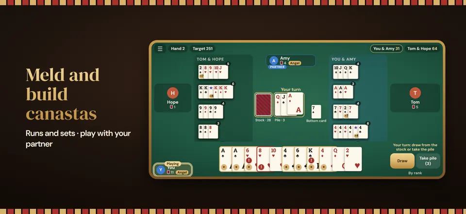
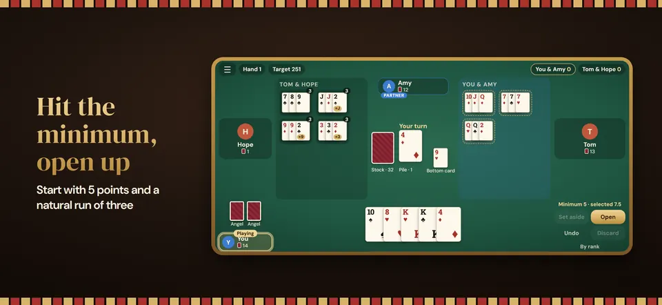
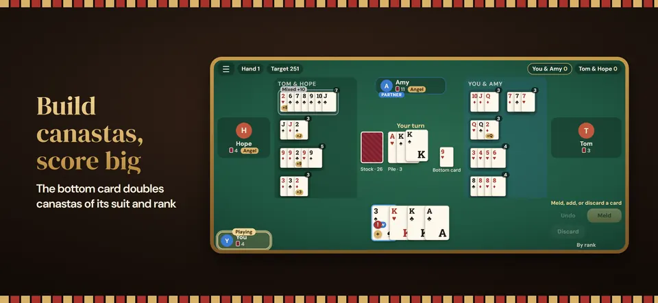
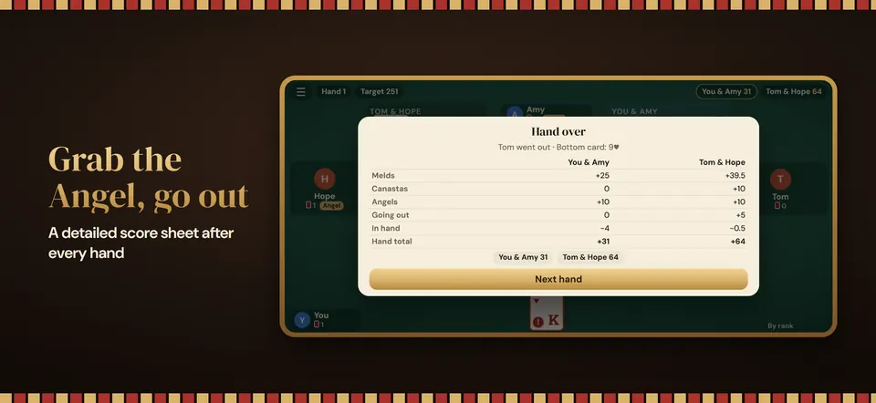

Games / Kanasta

Canasta card game
Kanasta
Meld, build canastas, grab the Angel! Kanasta brings the classic partnership card game to your phone and browser with familiar table rules. Play the computer as much as you like, create a room with friends or meet new opponents online.




How to play
- Play with two decks and four jokers. Jokers and 2s are wild.
- Meld runs (♥3 ♥4 ♥5) and sets (10 10 10), with at most one wild card per meld.
- Your first meld must reach the minimum opening: 5 points, or 9 after your team passes 101.
- Empty your hand to take the 11-card Angel pile and keep playing. The first team to 251 wins.
The table
- 4 players in teams: partners sit across from each other.
- 3 players: the first to open plays alone and the other two become a team.
- Bottom card: the bottom card of the cut deck marks the hand’s special canastas and doubles their points.
Easy to play
- Tap cards, set them aside, open. You always see how close you are to the minimum.
- You choose where the wild card goes.
- A detailed score sheet after every hand, and you can continue where you left off.
Bots and online rooms
- Easy, Medium and Hard bots build melds, know when to take the pile and avoid feeding you good cards.
- Create a room with friends and share the 6-digit code, or use Quick match.
- A turn timer and bot takeover on disconnect keep the game moving.
Tips
- Watch the bottom card. Canastas in that rank are worth double this hand, so they are worth waiting for.
- Save your wild cards. With only one allowed per meld, a joker spent early is often a canasta lost later.
- Before you discard, look at what your opponents have melded. Throwing a card that extends their meld hands them points.
- Opening is not always urgent. Holding cards a little longer can let you open with a bigger meld.
- Count the cards left in the pile when a hand is ending. Being the one who empties their hand first can decide who gets the Angel.
Questions
Is Kanasta free?
Yes. There are no ads and no betting.
Do I need an account?
No. You can play right away. Signing in with Google or Apple in the app is optional and keeps your rating.
Can I play in a browser?
Yes, at kanasta.alaystudio.app, both against bots and online.
Which languages does it support?
English and Turkish.